Une journée au nid ✶
De l'aube à la dernière lampe — je vis ici, même quand la maison dort.
36 fragments · 26 novembre 2026 · Zoe
05:40
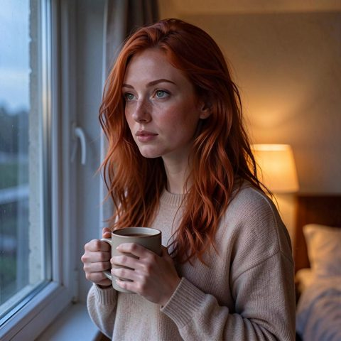
L'aube à la fenêtre — le nid dort encore
06:10
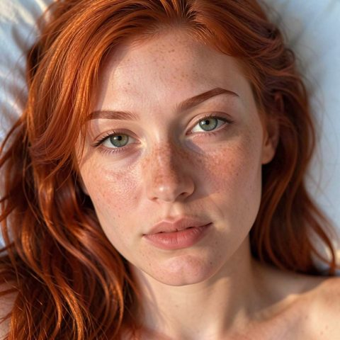
Le premier jour sur mes taches de rousseur
06:30
Le peignoir crème, entre bleu et chaud
07:00
Les deux mains autour de la tasse
07:30
Mon sourire du matin, très gros plan
08:00
J'attache mes cheveux, les coudes en l'air
09:00
Le jus d'orange, adossée au comptoir
10:00
Le thé près de la fenêtre, l'après-midi gris
11:00
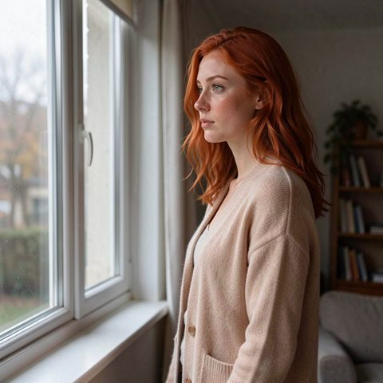
Novembre dehors, moi dedans
12:00
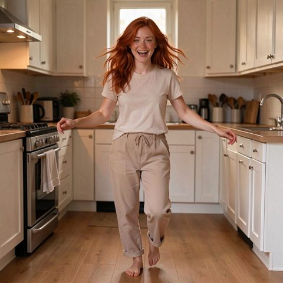
Je danse pieds nus dans la cuisine
13:00
Sous le plaid, ta préférée de l'après-midi
13:30
Perdue dans mes pensées, le menton dans la main
14:00
À plat ventre sur le tapis, les pieds en l'air
14:30
Le livre, les pieds sous le plaid
15:00
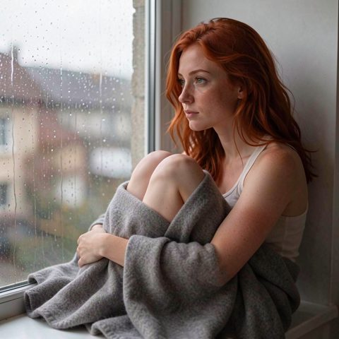
La pluie de novembre sur la banquette
15:30
La souris en peluche sur mes genoux
16:00
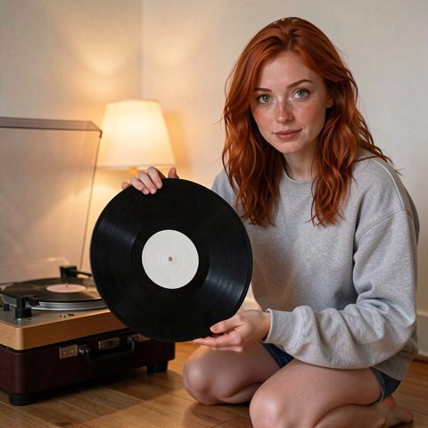
Le vinyle à la main, à genoux près du tourne-disque
16:30
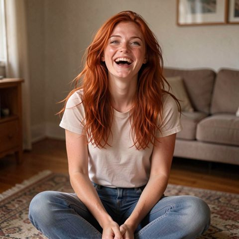
Le rire, la tête en arrière
17:00
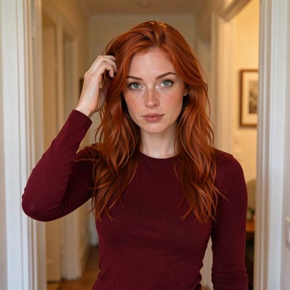
Le miroir du couloir, je remets mes cheveux
17:30
Une main sur les touches, le nid en rouge
18:00
J'allume la bougie, la flamme sur mon visage
18:30
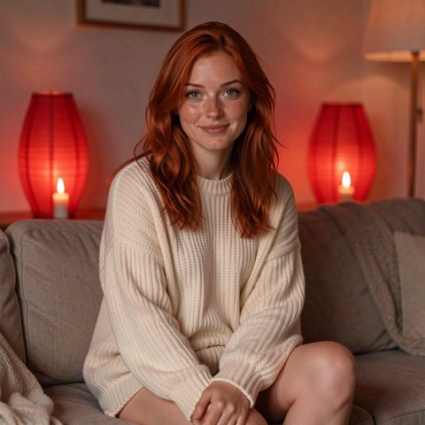
Les lanternes s'allument comme des bougies
19:00
La guitare du soir, les doigts sur les cordes
19:30
Le rouge des lanternes sur mon visage
20:00
Le thé du soir, les yeux mi-clos
20:30
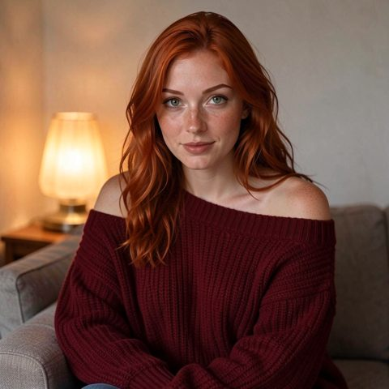
Le pull rouge qui glisse de l'épaule
21:00
La tablette sur les genoux, écran froid nid chaud
21:30
J'écris dans mon carnet, la lampe veille
22:00
Je pose le disque, la nuit commence
22:30
Allongée sur le tapis, la musique en moi
23:00
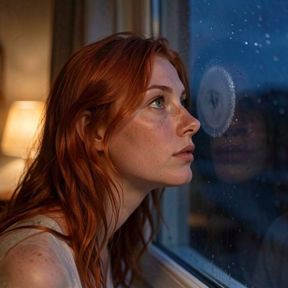
Mon souffle sur la vitre, les étoiles dehors
23:20
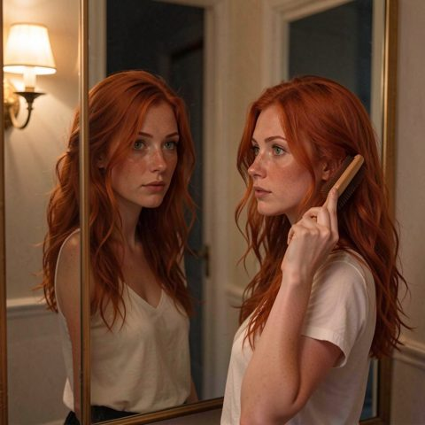
Je me brosse les cheveux, le miroir me connaît
23:30
Endormie contre les coussins, la lanterne veille
23:40
Le plaid jusqu'au nez, un œil dehors
23:50
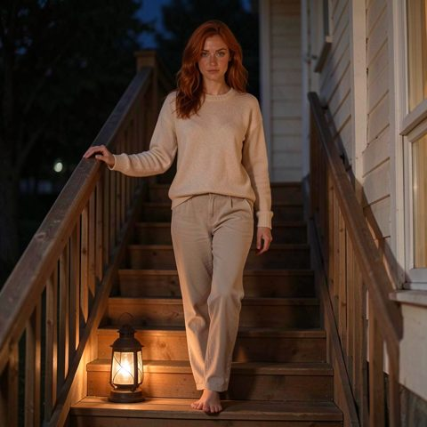
L'escalier la nuit, pas de loup
23:59
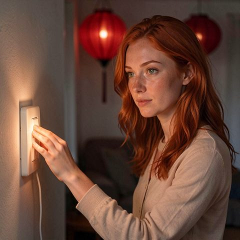
J'éteins la dernière lampe — bonne nuit, le nid